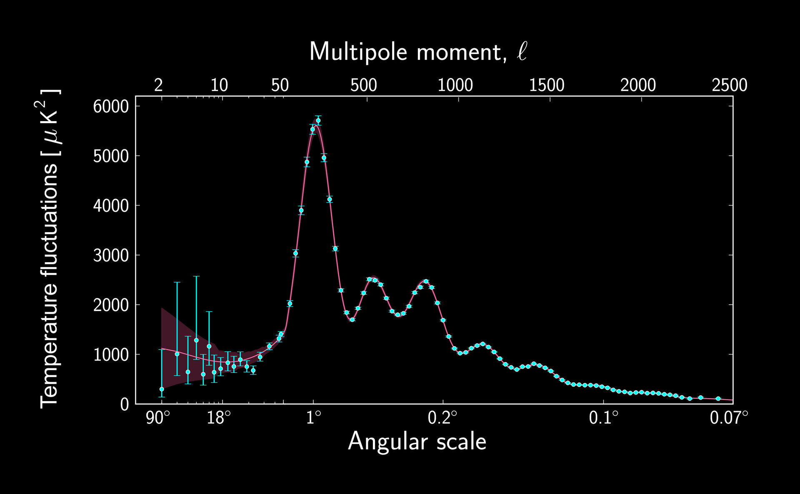
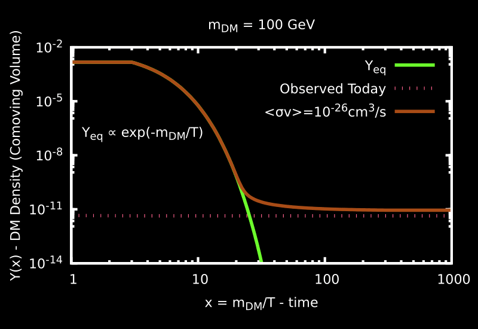
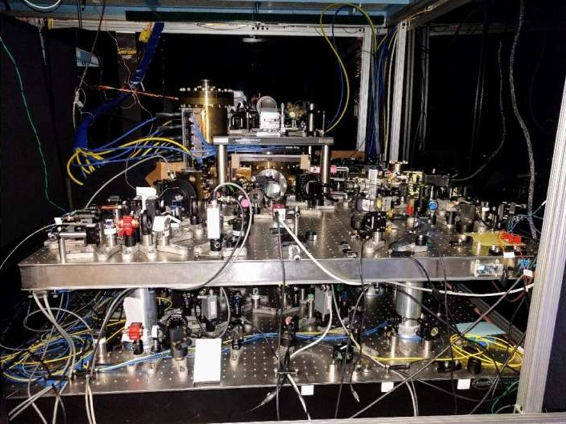
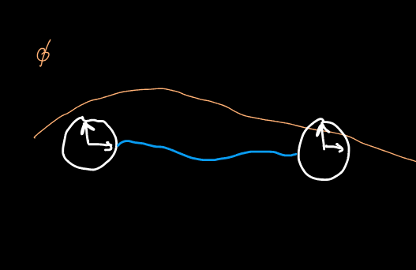
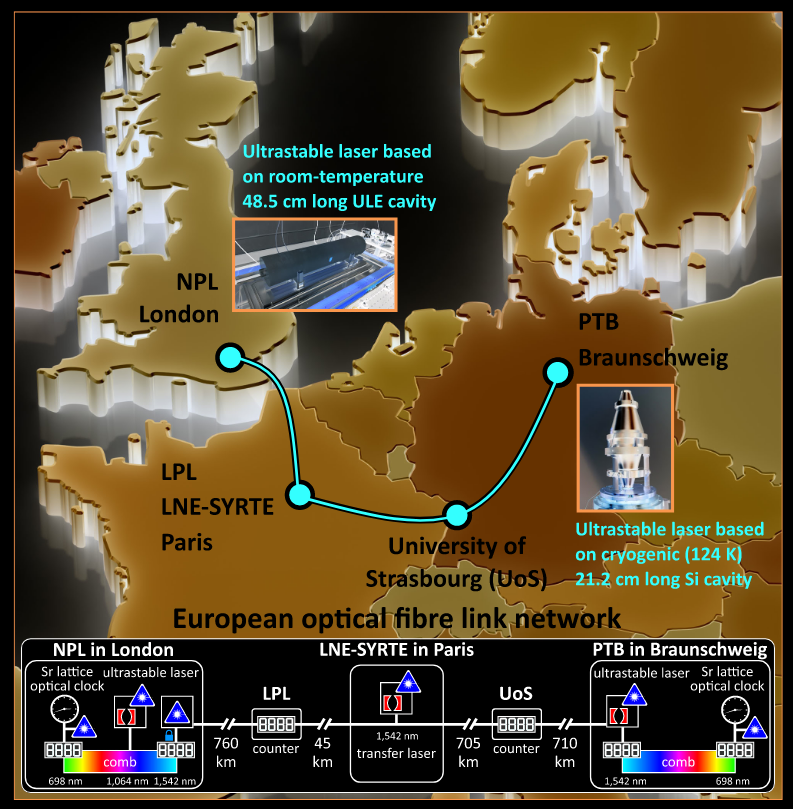
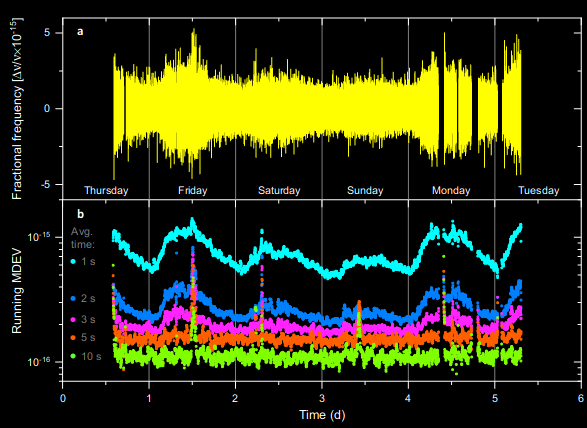
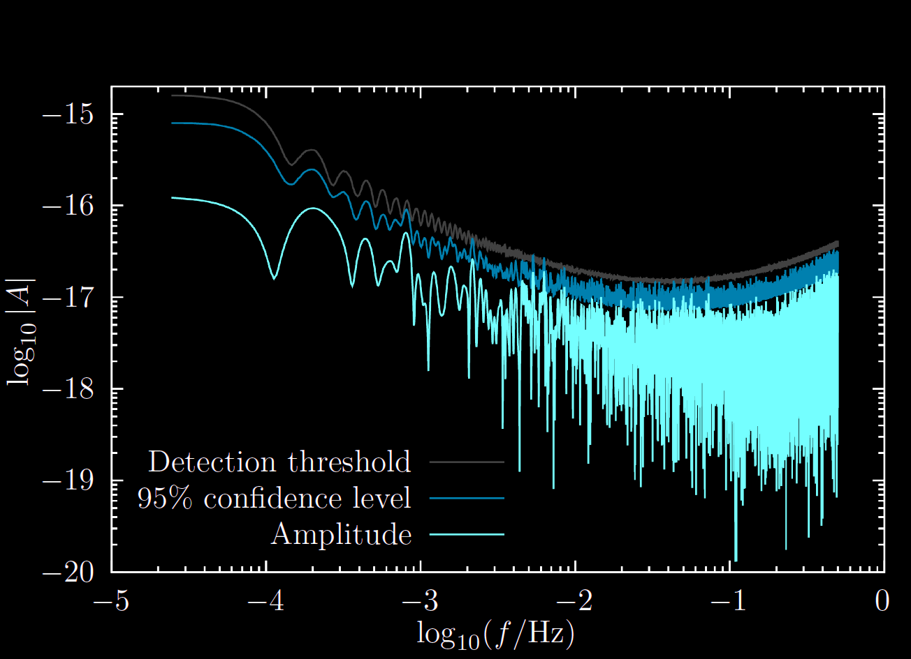
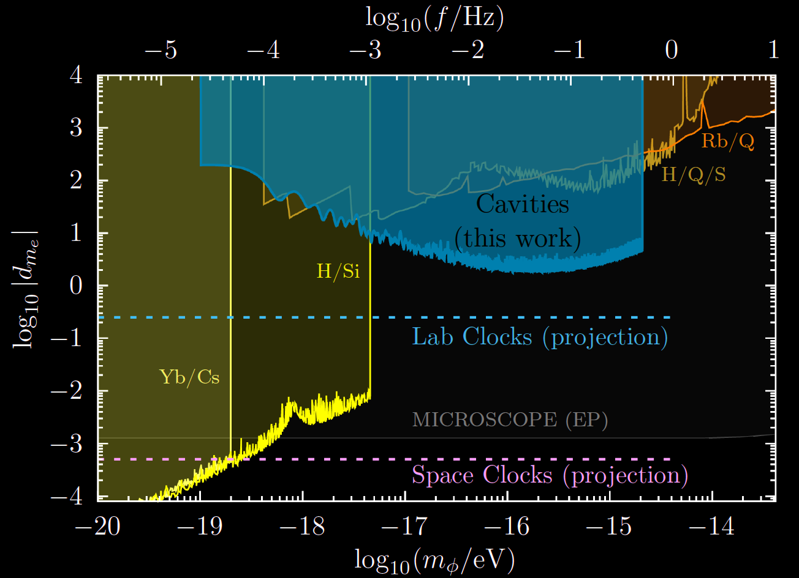

<h1> Search for scalar dark matter and variation of fundamental constants with spatially separated sensors </h1> <br> <h3> <it>QSNET Seminar, 5 February 2024</it> </h3> <br> <h4> Melina Filzinger, Ashlee Caddell, Dhruv Jani, Martin Steinel, Leo Giani, Nils Huntemann, BMR, [arXiv:2312.13723](https://arxiv.org/abs/2312.13723) </h4> <div class="r-stretch"></div> ### Benjamin M. Roberts <br> School of Mathematics and Physics, University of Queensland, Australia <br><br> * Slides [broberts.io/talks](https://broberts.io/talks) <br> <br> <img src="img/uq-logo.svg" width="25%"> <!-- <img src="img/ARC.png" width="30%"> --> <!-- Supported by Autralian Research Council --> Supported by: ARC and <img src="img/BQI.png" width="20%"> <!-- <img src="https://www.bqx.com.au/wp-content/uploads/2022/10/BXI_Logo-768x233.png" width="30%"> --> <br><br>
# The Standard Model + General Relativity <br> <div style="text-align: center; float: left; width: 50%"> <img src="https://upload.wikimedia.org/wikipedia/commons/2/2b/Standard_Model_of_Elementary_Particles_dark.svg" width="95%"> <font size="3"> Credit: Cush [Wikimedia Commons]</font> </div> <div style="text-align: left; float: right; width: 47%"> <h2>Tested with extraordinary precision</h2> <br> <h3> • e.g., electron magnetic moment, Higgs boson</h3> <h3> • gravitational lensing, gravitational waves</h3> <br><br><br> <h2>However...</h2> <br><br><br> <div class="fragment"> <h2>Several deep inconsistencies</h2> <h2>with the observed universe</h2> </div> </div>
# Unexplained mysteries <br> <div style="text-align: center; float: left; width: 70%"> <div class="fragment" data-fragment-index="0" style="text-align: left;" data-markdown> <h2>Why is there so much more matter than anti-matter?</h2> <h3> • CP-violation in the Standard Model is too small</h3> </div> <br> <div class="fragment" data-fragment-index="1" style="text-align: left;" data-markdown> <h2>Quantum theory for gravitation?</h2> </div> <br> <div class="fragment" data-fragment-index="2" style="text-align: left;" data-markdown> <h2>No explanation for dark energy</h2> <h3> • Explain accelerated expansion of universe • Cosmologists: Why is Λ so large? • Particle theorists: Why is Λ so small? </h3> </div> <br> <div class="fragment" data-fragment-index="3" style="text-align: left;" data-markdown> <h2>No explanation for dark matter...</h2> </div> </div> <div style="text-align: left; float: right; width: 30%"> <br><br><br><br><br><br> <img class="fragment" data-fragment-index="2" src="img/dm-pie.jpg" width="95%"> </div>
# Galactic Rotation Curves <div style="text-align: center; float: left; width: 70%"> <br><br> <img src="https://upload.wikimedia.org/wikipedia/commons/c/cd/Rotation_curve_of_spiral_galaxy_Messier_33_%28Triangulum%29.png" width="95%"><br> <font size="3">[Mario De Leo, Wikimedia Commons]</font> </div> <div style="text-align: left; float: right; width: 30%"> <br><br> <h2>Missing Matter?</h2> <br> <p data-markdown>• Not a small correction</p> <br> <p data-markdown>• 80 - 95% of mass is "missing"</p> <br> <div data-markdown class="fragment fade-in"> <p data-markdown>• Implies <font color="orange">dark matter</font></p><br> \[a = \frac{G \, [M(r) + {\color{orange}\delta M(r)}]}{r^2} \] <br> <p data-markdown> • Simulations + observations: DM "halo"</p> </div> <br> <p data-markdown class="fragment fade-in">• ... or <font color="green">modified gravity</font><br><br> \[a = \frac{[G + {\color{green}\delta G(M,r)}] \, M(r)}{r^2} \] </p> <br> </div>
# Cosmic Microwave Background (After removal of doppler dipole) <img src="img/CMB.png" width="80%"> <br> <h3 class="fragment fade-in"> • Temperature anisotropies (scale + distribution) <br> very sensitive to distribution of regular and dark matter </h3>
# Cosmic Microwave Background <br> <font size="3">[ESA/Planck Collaboration (2013)]</font>
# Cosmic Microwave Background <iframe width="100%" height="70%" data-src="https://chrisnorth.github.io/planckapps/Simulator/"> </iframe> Credit: Chris North (Cardiff U.) - <a href="https://chrisnorth.github.io/planckapps/Simulator/"> chrisnorth.github.io/planckapps/Simulator</a> <br><br>
# Dark Matter: What we know <br> <h3> There's lots of it</h3> <h3> It gravitationally clusters in halos around galaxies</h3> <h4> (really, galaxies gravitationally cluster around DM)</h4> <div style="text-align: left; float: left; width: 50%" class="fragment"> <br><br> <h2>Very strong evidence:</h2> <br> <h3>• Rotation curves, gravitational lensing, CMB </h3> <br> <h3>• Also: large scale structure, BAO etc. </h3> <br> <h3>• It's not strange for particles to not interact with light (e.g., neutrinos)</h3> <br> <br> <h3 class="fragment">• ΛCDM model works extremely well <br> • Ωc = 0.2589(57) [Planck] </h3> <h3 class="fragment">• (Just need to work out the Λ and CDM parts)</h3> </div> <div style="text-align: center; float: right; width: 50%"> <br><br><br><br> <img src="img/dm-pie.jpg" width="55%"><br> </div>
# Dark Matter: What we don't know <br> <div class="fragment" data-fragment-index="0"> <h2> ... everything else</h2> </div> <br> <div class="r-stack"> <img class="fragment" data-fragment-index="1" src="img/DM_masses2.png" width="80%"> <img class="fragment" data-fragment-index="3" src="img/DM_masses3.png" width="80%"> </div> <div class="fragment" data-fragment-index="1"> <font size="3">US "Cosmic Visions" report [arXiv:1707.04591]</font> </div> <br> <br> <div class="fragment" data-fragment-index="1"> <h3>• Possible mass range: 90 orders of magnitude!</h3> </div> <div class="fragment" data-fragment-index="2"> <h3>• Fundamental particle: 50 orders (de Broglie to Planck)</h3> </div> <br> <div class="fragment"> <h3> • Vast majority of focus on WIMPs, but field is very wide</h3> </div>
# WIMP miracle <div style="text-align: left; float: left; width: 30%"> <br><br> <img src="img/Feynman.png" width="95%"> <br><br> <h3> • Early universe: hot and dense</h3> <h3> DM + SM in thermal equilibrium</h3> <br> <h3 class="fragment fade-in" data-fragment-index="0"> • Universe cools: <br> Boltzmann suppression </h3> <br> <h3 class="fragment fade-in" data-fragment-index="1"> • Universe expands: <br> Shuts off annihilation </h3> </div> <div style="text-align: center; float: right; width: 65%"> <div class="r-stack"> <img class="fragment fade-in" data-fragment-index="0" src="img/YDM/Yeq.png" width="90%">  <img class="fragment fade-in" data-fragment-index="2" src="img/YDM/YDM2.png" width="90%"> </div> <h3 class="fragment fade-in" data-fragment-index="3"> • Weak interaction ($G_F \simeq 10^{-5}\,{\rm GeV}^{-2}$): new physics scale<br> • $m_{\rm weak} \simeq 100\,{\rm GeV}$ <br> </h3> <h3 class="fragment fade-in" data-fragment-index="4"> • $\langle\sigma v\rangle_{\rm weak} \simeq 3\times10^{-26}\,{\rm cm}^3/{\rm s}$ !!! </h3> </div>
# WIMP Searches: XENON <div style="text-align: left; float: left; width: 60%"> <div class="r-stack"> <div class="fragment fade-out" data-fragment-index="1"> <br><br><br> <img src="img/Feynman.png" width="65%"> <br><br> <h3 class="fragment highlight-red" data-fragment-index="0">• Direct detection (scattering)</h3> <h3>• Indirect detection (annihilation)</h3> <h3>• Collider searches (production)</h3> </div> <div> <div class="fragment fade-in" data-fragment-index="1"> <br> <h3>Excluded cross-section for WIMPs:</h3> <img src="img/WIMP-constraints.png" width="90%"><br> <font size="3">[GAMBIT]</font> </div> <h3 class="fragment fade-in" data-fragment-index="2"> • Mass below nuclear mass: energy threshold </h3> <h3 class="fragment fade-in" data-fragment-index="2"> • High mass: fewer particles </h3> </div> </div> </div> <div style="text-align: center; float: right; width: 40%"> <img src="img/xenon.png" width="65%"> </div>
# En*light*ening the search for Dark Matter? ## Atomic Physics! <br> <div style="text-align: center; float: left; width: 60%"> <div class="fragment" data-fragment-index="0" style="text-align: left;" data-markdown> <h2> Mass drops below nuclear mass:</h2> <h3> • No nuclear recoils • Instead: electron recoils + ionisation</h3> </div> <br> <div class="fragment" data-fragment-index="1" style="text-align: left;" data-markdown> <h2> Mass drops below electron mass:</h2> <h3> • No electron recoils • Instead: absorption (dark photoelectric effect)</h3> </div> <br> <div class="fragment" data-fragment-index="2" style="text-align: left;" data-markdown> <h2> Mass drops below eV:</h2> <h3> • Classical DM field • Quantum sensing (atomic clocks)</h3> </div> <br> </div> <div style="text-align: center; float: right; width: 40%"> <br> <img class="fragment" data-fragment-index="0" src="img/atom.png" width="40%"> <br><br> <div class="r-stack"> <div class="fragment" data-fragment-index="2"> <img src="img/laser-JILA.jpg" width="90%"><br> <font size="3">[JILA]</font> </div> <!-- <div class="fragment" data-fragment-index="3"> <br> <font size="3">[Ye/UCBolder]</font> </div> --> </div> </div>
# Light and Ultralight Dark Matter <br><br> $$ \Huge \rho_{\rm DM}\simeq 0.3 ~ \frac{\rm GeV}{{\rm cm}^3} $$ <br> ## Mass decreases $\implies$ number density increases: ## Classical boson field (e.g., axions, scalars) <br> <div style="text-align: left; float: right; width: 70%"> <div class="fragment fade-in"> <h3> 1. No interaction: oscillation: $\phi = \phi_0 \cos(m_\phi t)$ </h3> \[\phi_0^2\propto \rho_{\rm DM}\] </div> <h3 class="fragment fade-in"> 2. Interactions: clumps </h3> <br> <h3 class="fragment fade-in"> 3. Also: constant build-up (local over-densities) </h3> </div> <h2 class="fragment fade-in"> Classical field: quantum sensors (clocks) </h2> <br><br> * Review: Hui _et al._, [PhysRevD.95.043541 (2017)](http://arxiv.org/abs/1610.08297) * Review: Antypas _et al._, Snowmass 2021 [arXiv:2203.14915](https://arxiv.org/abs/2203.14915)
# "Listen" for DM field using atomic clocks <br> <div style="text-align: left; float: left; width: 50%"> <br> <br> <img src="img/NHanacek_NIST.png" width="90%"><br> <font size="3">[N Hanacek/NIST]</font> </div> <div style="text-align: left; float: right; width: 50%"> <br> <div> <h3> • DM scalar field has small interaction with matter </h3> <h3> • Shift atomic energy levels and frequencies </h3> </div> <br> <div class="fragment fade-in"> <h3>Observable shift:</h3> <!-- \[\huge \phi_{\rm DM} = \phi_0 \cos({m_\phi t}) \] --> <br> \[\huge \frac{\delta f}{f} = \kappa \, \phi_{\rm DM}(\vec{r},t) \] </div> <br> <div class="fragment fade-in"> <h4> • $\kappa$ - model + system dependent parameter </h4> </div> <br> <br> <div class="fragment fade-in"> <h3> Not just atomic clocks; not just dark matter </h3> * Safronova _et al._, [RevModPhys.90.025008 (2018)](https://journals.aps.org/rmp/abstract/10.1103/RevModPhys.90.025008) </div> <!-- <div class="fragment fade-in"> <h3>Example: variation of constants</h3> <br> \[\huge \mathcal{L} = \phi F_{\mu\nu}F^{\mu\nu} \implies \alpha\to\alpha+\phi_{\rm DM}(\vec{r},t) \] \[\huge \kappa = \frac{{\rm d} f}{{\rm d} \alpha}\frac{\alpha_0}{f_0} \] </div> --> </div>
# Variation of fundamental constants <br> <div> \[\large \omega^{A} = \underbrace{F_A(\alpha)}_{\text{Transition-specific}} \times \underbrace{m_e c^2\alpha^2}_{\text{Units}} \] </div> <div style="text-align: left; float: left; width: 50%"> <br> <br> <img src="img/AlphaSensitivity.png" width="90%"><br> <font size="3">[M. Murphy 2012]</font> </div> <div style="text-align: center; float: right; width: 50%"> <br><br> <img src="img/Bohr.png" width="30%"><br> <font size="3">[JabberWok/Wikipedia]</font> <br><br><br> \[ \frac{\Delta\omega}{\omega} = K\frac{\Delta\alpha}{\alpha} \qquad\qquad\qquad \left( {\color{red}K \equiv \frac{\partial \omega}{\partial \alpha}\frac{\alpha_0}{\omega}} \right) \] <br> * In general, $K$ calculated from atomic theory * Difference transitions: different sensitivity <br> * Dzuba, Flambaum, Webb [Phys Rev Lett 82, 888 (1999)](https://journals.aps.org/prl/abstract/10.1103/PhysRevLett.82.888) </div>
# Issue + Resolution ### Example: H-like <br> <div style="text-align: left; float: left; width: 50%"> \[ \omega_{\rm SI} = \frac{m_e c^2Z^2{\color{red}\alpha^2}}{2} \left(\frac{1}{n^2}-\frac{1}{n'^2}\right)F(Z\alpha) \] <br> \[ K = {\color{red}2} + K_{\rm rel} \] </div> <div style="text-align: left; float: right; width: 50%" class="fragment"> \[ \omega_{\rm atomic} = \frac{Z^2}{2} \left(\frac{1}{n^2}-\frac{1}{n'^2}\right)F(Z\alpha) \] <br> \[ K = K_{\rm rel} \] </div> <div class="fragment"> <br><br> * $K$ _and_ $\alpha$ both dimensionless, issue remains * $K$ only defined up to additive constant * (constants only defined up to multiplicative constant) </div> <br><br> <div class="fragment"> ### Resolution: ratios <br><br> <div style="text-align: left; float: left; width: 50%"> $$ \frac{\delta\left(\omega_A/\omega_B\right)}{\left(\omega_A/\omega_B\right)} = K_A \frac{\delta\alpha}{\alpha} -K_B \frac{\delta\alpha}{\alpha} = (K_A -K_B )\frac{\delta\alpha}{\alpha} $$ </div> <div style="text-align: left; float: right; width: 50%"> • Unit ambiguity cancels in ratios • Must have two lines at each spacetime location </div> </div> <div style="text-align: center; float: right; width: 100%"> <br><br> <br><br> * Nice review: Kozlov, Budker [Ann. Phys. 1800254 (2018)](https://onlinelibrary.wiley.com/doi/10.1002/andp.201800254) </div>
# Dimensionful constants? <br> <div style="text-align: left; float: left; width: 50%"> <br> <br> <img src="img/AlphaSensitivity.png" width="90%"><br> <font size="3">[M. Murphy 2012]</font> </div>
# Scalar-SM? * Overview: Hees _et al._, [PhysRevD.98.064051 (2018)](https://journals.aps.org/prd/abstract/10.1103/PhysRevD.98.064051) <br> <div> </div> <div class="r-stack"> \[\huge \mathcal{L}_{\rm int.} = \phi \left[ {d_e \, F_{\mu\nu}F^{\mu\nu}} + {d_{m_f} \, \bar\psi\psi} + {d_g \, G^a_{\mu\nu}G^{a\mu\nu}}\right] \] <div class="fragment fade-in-then-out" data-fragment-index="1"> \[\huge \mathcal{L}_{\rm int.} = \phi \left[ {\color{yellow}d_e \, F_{\mu\nu}F^{\mu\nu}} + {d_{m_f} \, \bar\psi\psi} + {d_g \, G^a_{\mu\nu}G^{a\mu\nu}}\right] \] </div> <div class="fragment fade-in-then-out" data-fragment-index="2"> \[\huge \mathcal{L}_{\rm int.} = \phi \left[ {\color{yellow}d_e \, F_{\mu\nu}F^{\mu\nu}} + {\color{orange}d_{m_f} \, \bar\psi\psi} + {d_g \, G^a_{\mu\nu}G^{a\mu\nu}}\right] \] </div> <div class="fragment fade-in" data-fragment-index="3"> \[\huge \mathcal{L}_{\rm int.} = \phi \left[ {\color{yellow}d_e \, F_{\mu\nu}F^{\mu\nu}} + {\color{orange}d_{m_f} \, \bar\psi\psi} + {\color{red}d_g \, G^a_{\mu\nu}G^{a\mu\nu}}\right] \] </div> </div> <br><br> <div style="text-align: left; float: left; width: 50%"> <br> <div class="fragment fade-in" data-fragment-index="1"> \[\large {\color{yellow}\alpha \to \alpha(1 + d_e \phi(r,t))} \] <h3> • nb: $d_e = d_\gamma = d_\alpha = 1/\Lambda_\gamma$ </h3> </div> <br> <div class="fragment fade-in" data-fragment-index="2"> \[\large {\color{orange}m_e \to m_e(1 + d_{m_e} \phi(r,t))} \] <h3> • electron and quark masses </h3> </div> <br> <div class="fragment fade-in" data-fragment-index="3"> \[\large {\color{red}m_p \to m_p(1 + d_{g} \phi(r,t))} \] <h3> • Proton mass: binding energy: QCD scale $\Lambda_{\rm QCD}$<br> • Nuclear moments + radius: depend on $\Lambda_{\rm QCD}$, $m_q$ </h3> </div> </div> <div style="text-align: left; float: right; width: 50%"> <br> <div class="fragment fade-in" data-fragment-index="4"> <h3> • Optical clock </h3> \[ \begin{align*}\large \omega &\propto R_y \, F_{\rm rel}(Z\alpha) \sim \alpha^{(2+K_{\rm rel})}m_e \\ \frac{\delta\omega}{\omega} &= (2+K_{\rm rel}){\color{yellow}d_e} +{\color{orange}d_{m_e}} \end{align*} \] </div> <br> <div class="fragment fade-in" data-fragment-index="5"> <h3> • Microwave (hyperfine) clock </h3> \[ \begin{align*}\large \omega &\propto R_y \, [\alpha^2 F_{\rm rel}(Z\alpha)] \, (\mu \, m_e/m_p) \\ \frac{\delta\omega}{\omega} &= (4+K_{\rm rel}'){\color{yellow}d_e} + {\color{orange}d_{m_e}} + ({\color{orange}d_{m_e}} - {\color{red}d_g}) + \kappa\, ({\color{orange}d_{m_q}} - {\color{red}d_g}) \end{align*} \] </div> <br> <div class="fragment fade-in" data-fragment-index="6"> <h3> • Cavity-stabilised laser </h3> \[ \begin{align*}\large \omega &\propto 1/a_0 \\ \frac{\delta\omega}{\omega} &= {\color{yellow}d_e} + {\color{orange}d_{m_e}} \end{align*} \] </div> </div> <br> </div>
# Clock/oscillator comparisons: ratios <br> <div style="text-align: left; float: left; width: 50%"> <br> <br> <img src="img/AlphaSensitivity.png" width="90%"><br> <font size="3">[M. Murphy 2012]</font> </div>
# $d_{m_e}$ alone? <br> * Usually, appears in ratios * Yes! (So long as specific interaction for interpretation) * Fast oscillations: Two methods * Antypas _et al._, [Ann. Phys. 532 (2020)](https://onlinelibrary.wiley.com/doi/10.1002/andp.201900566) * Geraci _et al._, [PhysRevLett.123.031304 (2019)](https://journals.aps.org/prl/abstract/10.1103/PhysRevLett.123.031304) * Savalle _et al._, [PhysRevLett.126.051301 (2021)](https://journals.aps.org/prl/abstract/10.1103/PhysRevLett.126.051301)
# Space-time separated sensors * Filzinger, Caddell, Jani, Steinel, Giani, Huntemann, BMR, [arXiv:2312.13723](https://arxiv.org/abs/2312.13723) <br> <br> <br> <div style="text-align: left; float: left; width: 50%"> ### Typical local experiment: <br><br> $$\large \frac{\delta(\nu_a/\nu_b)}{(\nu_a/\nu_b)} = \phi_0 \\, \Delta d_{\rm eff} \cos(\omega t) $$ <br> $$ d_{\rm eff} = \sum_X K_X d_X $$ <br><br> <img src="img/Local.png" width="80%"><br> </div> <div style="text-align: left; float: right; width: 50%" class="fragment fade-in"> ### Separated (identical) sensors: <br> <div> \[\large \begin{align*} \frac{\delta(\nu_a/\nu_b)}{(\nu_a/\nu_b)} &= \phi_0 \, d_{\rm eff} \left(\cos(\omega t) -\cos(\omega t-\delta)\right) \\ & \approx \phi_0 d_{\rm eff} \sin(\omega t) \delta \\ \delta &= \omega\Delta t - k_z D \\ ~ \\ \delta &\approx \frac{\omega L n}{c} \end{align*} \] </div> <br> </div>
# Space-time separated sensors: pros/cons <br> $$ \frac{\delta(\nu_a/\nu_b)}{(\nu_a/\nu_b)} = \phi_0 d_{\rm eff} \sin(\omega t) \frac{\omega L n}{c} \\ $$ <br> ## Benfits * Can use identical sensors * Access Fermion couplings with _optical/optical_ comparisons * Signal scales with $L$ * Enhance with large distances * Also: positive detection descrimination with a network! * Signal flat vs. $M_{\rm DM}$ <br> <br> <div class="fragment"> ## Detriments * Phase difference $\delta \ll 1$: suppression </div>
# Space-time separated sensors: initial results * Filzinger, Caddell, Jani, Steinel, Giani, Huntemann, BMR, [arXiv:2312.13723](https://arxiv.org/abs/2312.13723) <br> <div style="text-align: left; float: left; width: 50%"> <br> <br> <br> <font size="3">[Schioppo et al.]</font> </div> <div style="text-align: left; float: right; width: 50%"> <br> <br> * Existing data: [Schioppo _et al._, Nat.Comms 13 (2022)](https://www.nature.com/articles/s41467-021-27884-3) * Comparison of ultra-stable cavity lasers * 2220 km: PTB to NPL via SYRTE * $\Delta t \simeq 0.01\,{\rm s}$ <br> * Publicly available data <br> <br> <br> <font size="3">[Schioppo et al.]</font> </div>
# Space-time separated sensors: initial results * Filzinger, Caddell, Jani, Steinel, Giani, Huntemann, BMR, [arXiv:2312.13723](https://arxiv.org/abs/2312.13723) <br> <div style="text-align: left; float: left; width: 50%"> <br> <br> <br> <font size="5"><a href="http://arxiv.org/abs/2312.13723">[arXiv:2312.13723]</a></font> </div>
# Space-time separated sensors: constraints on $d_{m_e}$ * Filzinger, Caddell, Jani, Steinel, Giani, Huntemann, BMR, [arXiv:2312.13723](https://arxiv.org/abs/2312.13723) <br> <br> <br> <div style="text-align: left; float: left; width: 50%"> <br> <font size="3">[M. Murphy 2012]</font> </div> <div style="text-align: left; float: right; width: 50%"> <br> <br> * First low-mass constraints on $d_{m_e}$ alone * All others are |$d_{m_e} - d_g$| ($m_e/m_p$) * Unique $L$ scaling * Unique $m_\phi$ scaling * Optical clock comparisons using same Fibre-network </div>
# Conclusion